It’s impossible to talk about creative coding, interactive experiences or generative design without talking about AI and generative models.
What are they ? Where do they come from ?
Most of today’s large generative models are actually built by combining some basic ideas that have been around for a while, like predictive systems and Machine Learning models.
Let’s look at some of the building blocks of these models and how they come to be created.
Machine Learning is the process of using data to automatically adjust parameters in our code.
Let’s say we own an online store and we only want to display advertisement during times when we know we have a large number of visitors on our site.
We could guess at what those times are, and write some code that looks like this:
if (time == "10am" or time == "4pm" or time == "8pm") {
displayAds();
}
Or, instead, we could have our code use information about yesterday’s visits to activate the advertisements. We might find out that we actually want to show the ads at 10:15, 4:33 and 8:10. This is Machine Learning.
There are two stages to the process of modeling:
Training, when we create a model, and inference, when we use the model on new data.
During training, we show lots and lots of data to some piece of code that automatically adjusts itself to detect patterns and improve its understanding about the data being shown. If we also show the model the correct answer we want it to learn, we are performing supervised learning.
Here, we are showing a variety of ways that the number \(8\) can be drawn to a piece of code that learns patterns in the shapes that it sees in images:
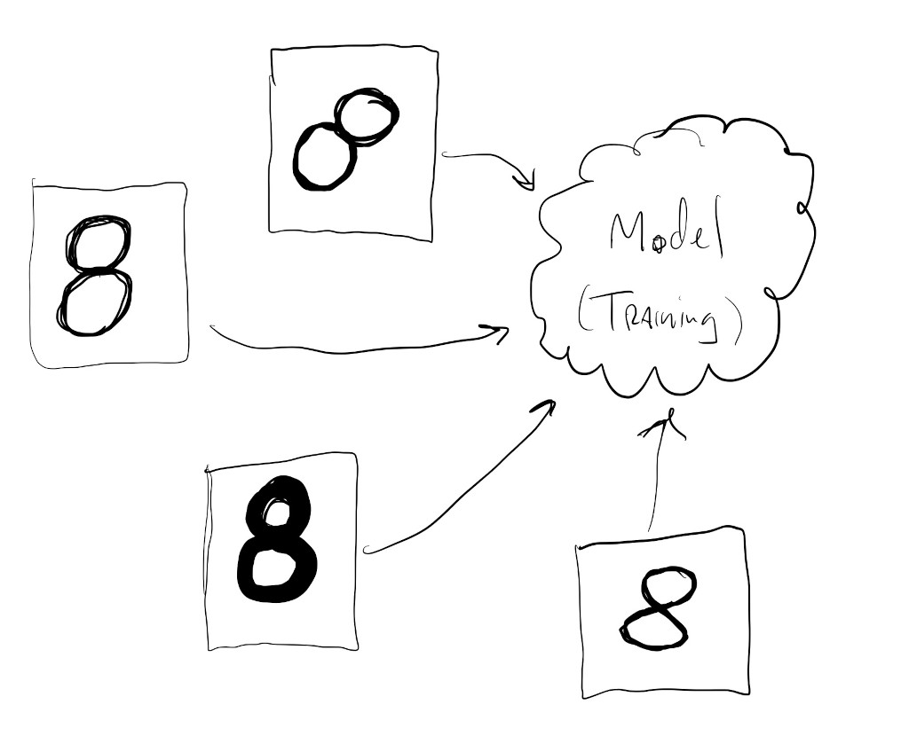
During inference we show the model some new piece of data and expect it to be able to predict something about this new data based on what it previously learned in training.
Given a new drawing of the number \(8\), we want the model to still be able to recognize this as the number \(8\):
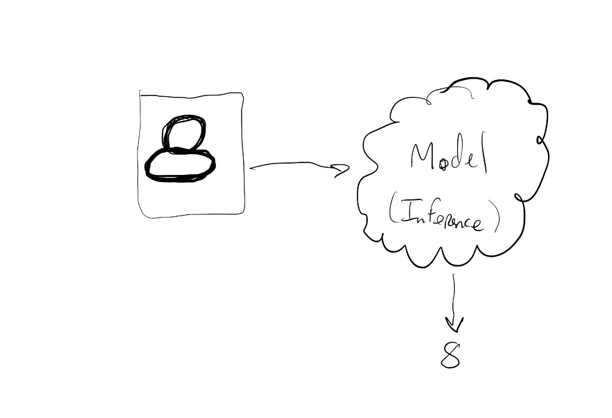
This kind of task (predicting numeric value from image of a digit) is called classification and is one of the two major types of tasks that supervised models are good at performing.
Classification is when we train a model to group similar items into pre-defined classes. While it might seem like a classification model is able to “detect” objects in an image, what it’s actually doing is learning how to divide the space of all possible inputs into subgroups or categories.
If we’re training a digit classification model, what the model is actually doing is learning how to divide the space of all possible images of digits into \(10\) sub categories, one for each possible digit. If we show the model an image of a cat it will classify it as a digit since that’s what it knows how to do; that’s how it divided its input space.
Classification model after training:
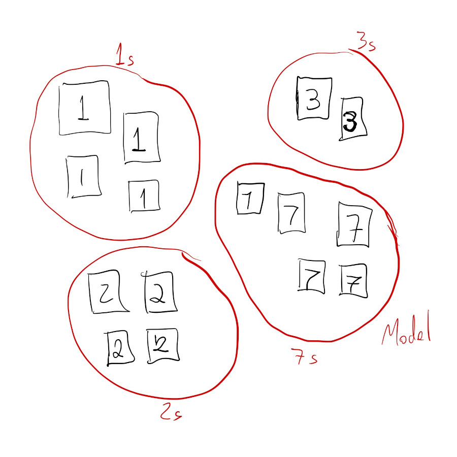
Classification model inference:
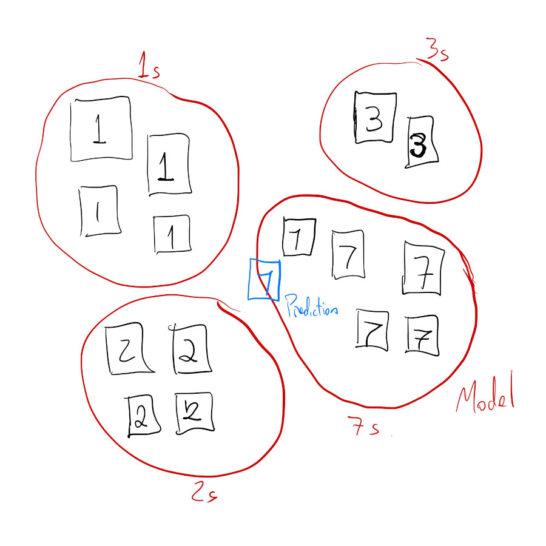
The other type of task that supervised learning is often used for is called regression.
This is where a model learns trends and patterns within numerical data in order to output a continuous-valued prediction from new input data. For example, we can train a regression model that learns about house prices based on their age, location, number of rooms and distance to public transit. Then, when we show the model information about the age, location, number of rooms and distance to public transit of new houses, the model will predict how much these new houses are worth.
Regression data:
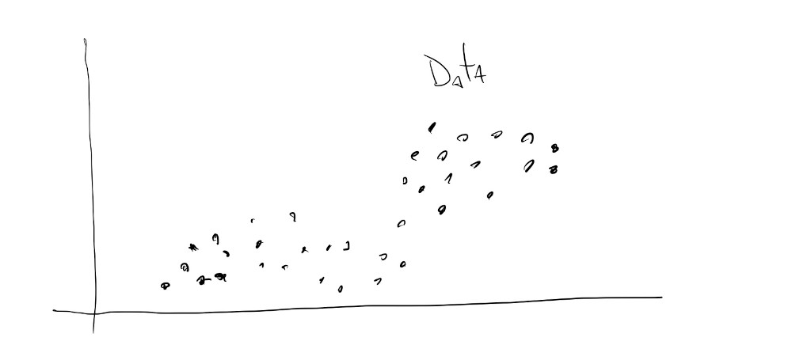
Regression model training, or, fitting:
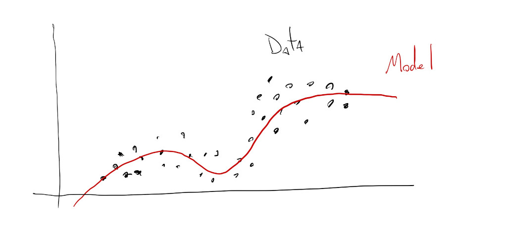
Regression model inference:
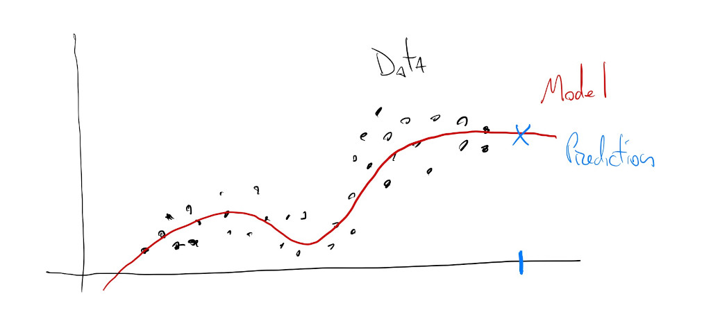
Regression outputs continuous values, while classification outputs discrete values.
It’s common to see classification models that are so specific in their predictions that it seems like they’re learning as they see new data, or that they’re interpolating between classes, but this is usually not the case. A classification model like this was probably trained to separate images into thousands or tens-of-thousands of classes.
But, how do we get models ?
There are many different ways to build models depending on the type and quantity of data that we have available for training. People have been fitting classification and regression models for a very long time. Some of the earliest mechanical computers where built to learn ocean patterns and predict tide rhythms.
Today, given advancements in parallel computing using GPUs and the massive amounts of data we’ve collected about ourselves, it’s more common to build models using neural networks.
This is a topic for a whole other series of tutorials, but for now, what is important to know about neural networks is that they’re made up of lots and lots of very simple computational units called “neurons” that turn on or off based on the inputs that they receive.
These neurons can have any number of inputs and the calculation they perform is usually a weighted sum followed by an activation function. For the neuron below, its output is calculated by first taking half of \(X_0\), adding it to \(0.3\) of \(X_1\), \(1.2\) times \(X_2\) and \(0.1\) of \(X_3\). Then, if that sum is greater than \(W_T\) (\(2.2\)) the neuron will be activated and its activation value propagated to the next neuron in the network.
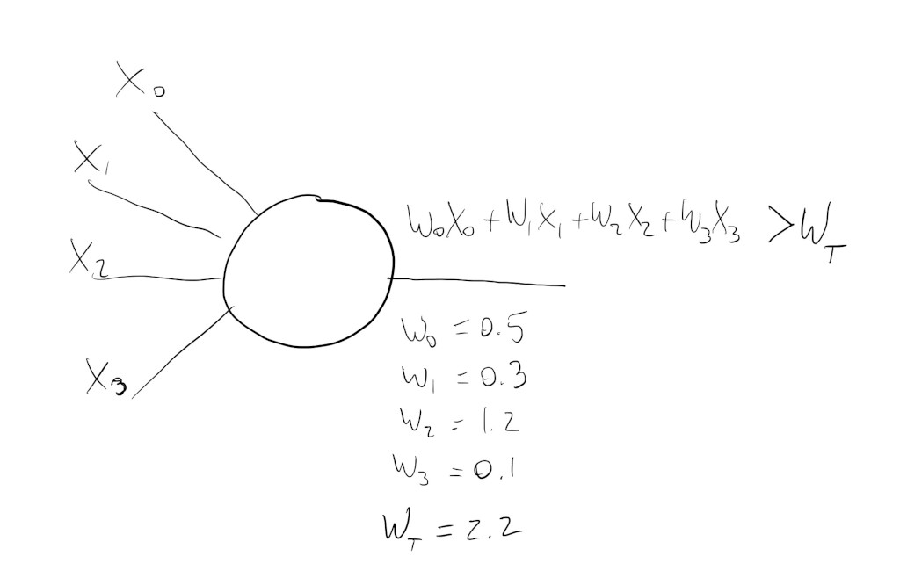
This might seem really simple, and it is, but once we cleverly connect hundreds, thousands, millions of these, they can be trained to activate under very specific conditions and patterns.
But… how ?
Well… those \(W\) parameters on the image above, sometimes called the weights of the inputs, are learned during training.
The simplified process of creating a neural network model might look something like this:
First, create a network. These can have as many layers and neurons as we’d like, but there are some specific network architectures that work better for certain types of tasks and certain types of data. Also, the more neurons we have to train, the more data we will need, so it’s kind of a tradeoff we have to make.
Two important aspects of the network that have to be considered here are its input and output layers. The input layer has to have enough neurons to accommodate the type of data we’re working with, and the output layer has to have as many neurons as output signals.
In this example, our digit input images are all \(28\) x \(28\) pixels, for a total of \(784\) pixels, so we need \(784\) neurons at the input:
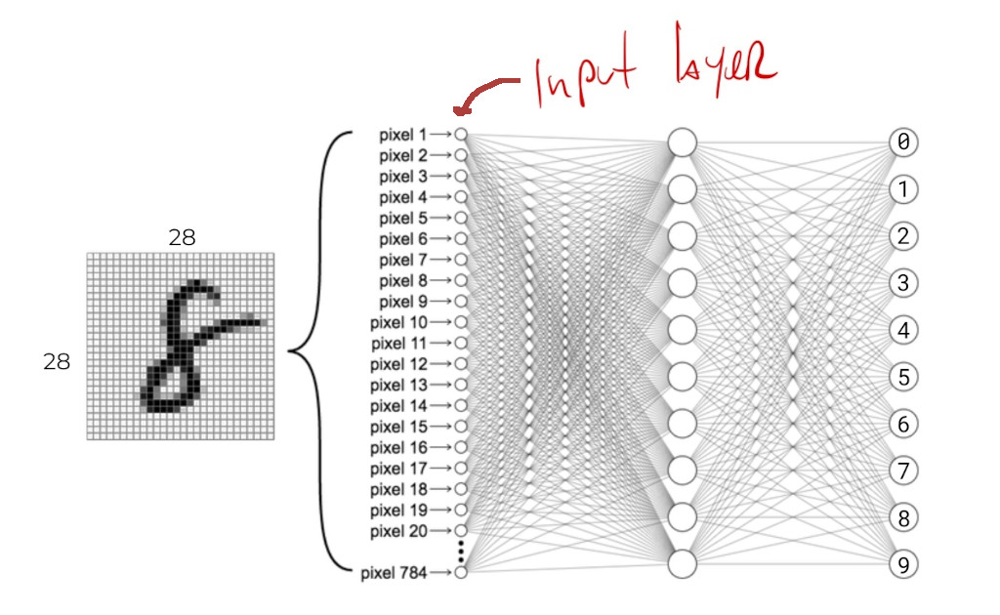
If we were working with words from the english language, we might need one neuron for each possible word in the language.
Since here we’re trying to predict one of \(10\) digits, we need \(10\) output neurons. When we give the network an image of a digit, its prediction is encoded in this output layer. We can usually decode which class is being predicted by looking at the position of the most-strongly activated neuron: if the first neuron is the strongest, the network is predicting a \(0\), if the second neuron is the strongest, then it’s a \(1\), and so on.
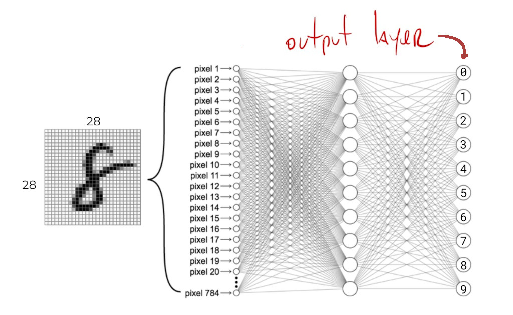
If we were predicting house prices, we would only need \(1\) continuous-valued output neuron. If we were predicting sale and rental prices separately for these houses, we would need \(2\) output neurons.
Once we have the network architecture selected and wired up, we can start training it.
Training our digit classification network might go somewhat like this:
Give the network an image of a number and see what it predicts:
Adjust the weights/parameters of the output layer so the next time the network sees this image it makes a slightly better prediction:
Then, adjust the weights/parameters of the second-to-last layer so the next time the network sees this image the last layer has better information to make a better prediction:
Then… propagate this kind of adjusting all the way to the input layer:
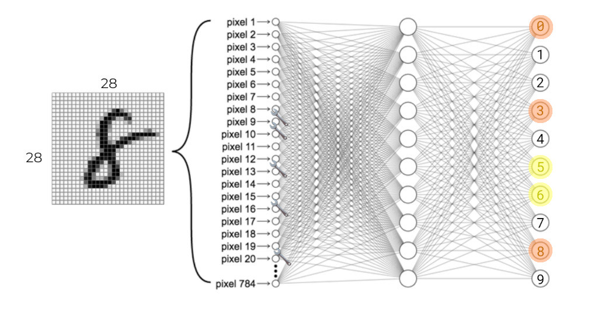
And, proceed by showing the network another image of a number and repeating the process:
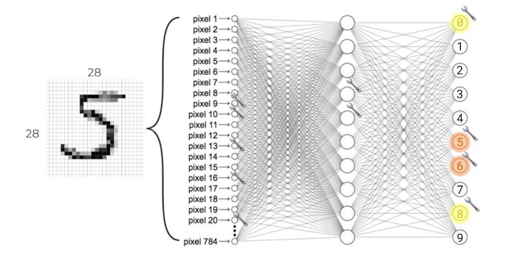
Keep showing all of the training images to the network until it has adjusted enough of its weights to achieve an acceptable level of accuracy for its predictions. No prediction is going to be \(100\%\) certain: some of the wrong output neurons will always activate. The important thing is that the correct neuron is the most-strongly activated:
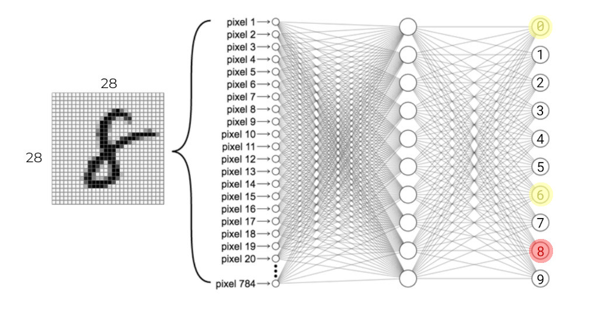
One important thing to note here is that this is a slow process. The neurons have to learn not only how to detect patterns about the \(10\) digits, but also different patterns within a given digit. Not all zeros look the same. In order to do this, the network can’t just pick the optimal parameter values for any given image, but instead has to slowly adjust itself over time, and over hundreds or thousands of images, in order to arrive at a set of parameters that work for a wide variety of images.
But that is it.
In short: AI models do one of two things: they classify input data or predict continuous values. Nowadays, most, if not all, of our AI models are built using Neural Networks, which are very large collections of very simple summing units that get adjusted by looking at thousands and thousands of input examples.
This overall process for training a model is pretty much the same, regardless of the type of network.
Other kinds of AI models that we often encounter might not look related to the classification or regression models we looked at, but there’s a good chance that they are.
For example, a text generation model, like ChatGPT, is in reality a complex classification model. During training the model learns to classify sequences of words from different sentences into classes. Sometimes these are sequences of \(5\) words, sometimes of \(1000\) words, but if we set up our network to have one output neuron for each possible word in our language, what the model really ends up learning is how to predict the next word in a given sequence of words:
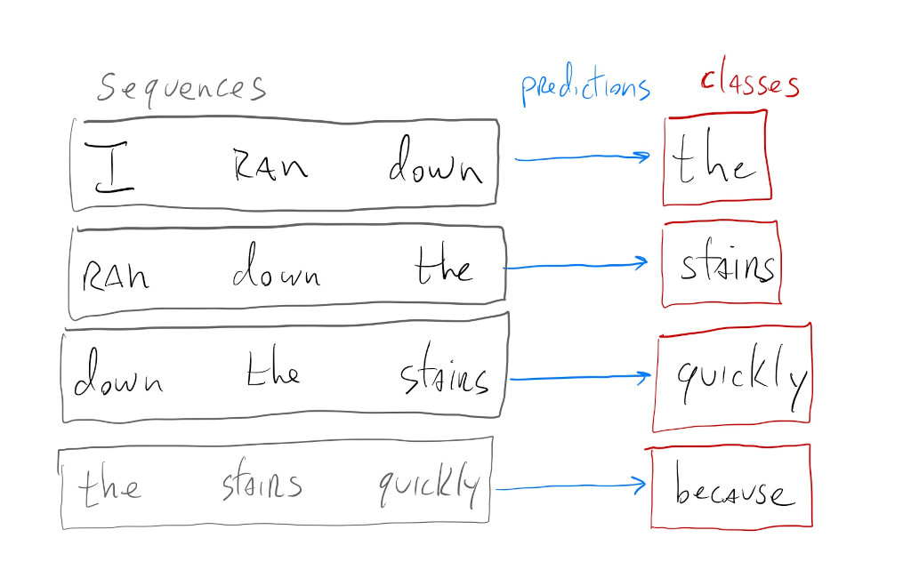
Models that detect not only if there’s a particular object in an image, but also where in the image the object is, might seem like totally different models. In reality, these object detection models are a combination of a classification model with a regression model. The classification model classifies subsections of the image into possible object classes, and the regression model learns the \(8\) values associated with the boxes that get drawn around objects:
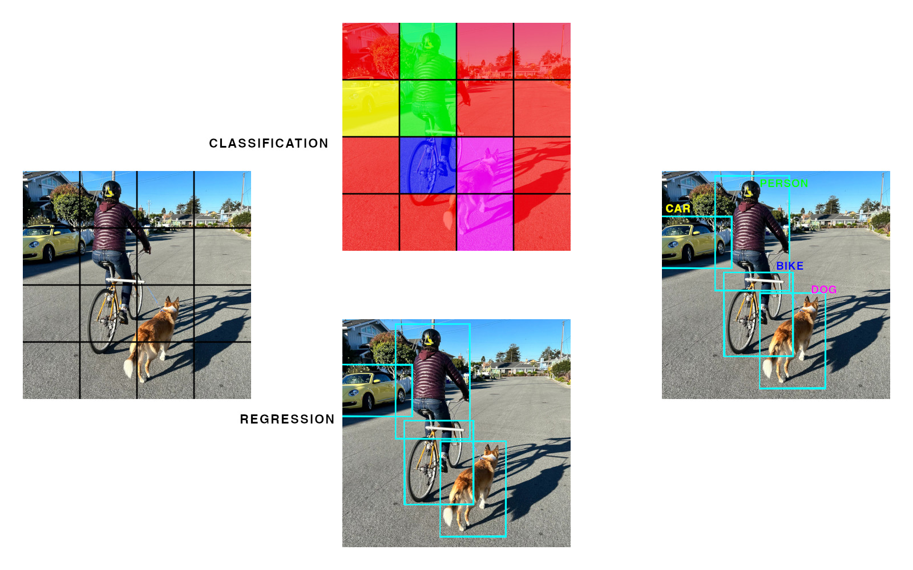
The regression model doesn’t know what the objects are, and the classification model doesn’t know where the objects start or finish, but their predictions can be combined to give us exact locations of specific objects.
Training models can be fun, but takes so much time, data and energy.
What we can focus on here is how to pick the correct pre-built model for a particular task and how to use different libraries and strategies for running inference using these pre-built models.
Let’s get started.